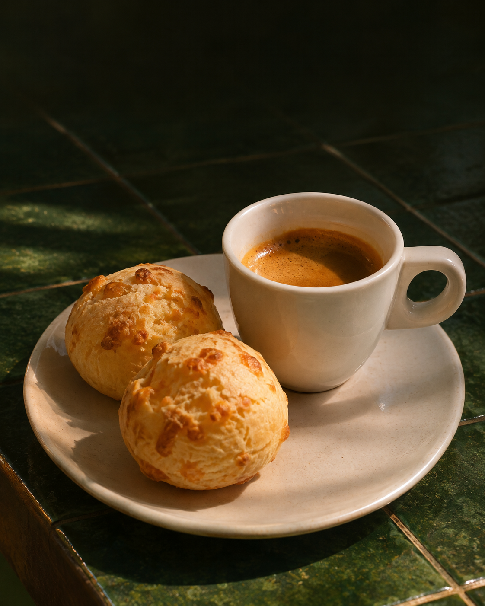

Café coado
Uma xícara sem pressa.
O melhor momento do dia pode ser o intervalo.
Café passado na hora, pão de queijo quentinho e um minuto para respirar antes de voltar à rotina.

Tem dia que pede um espresso rápido. Em outro, dá vontade de sentar com calma e pedir mais uma fatia de bolo.
O Intervalo é uma cafeteria fictícia criada para celebrar esses momentos simples.
Do cardápio
Uma xícara sem pressa.
Quentinho, do jeito certo.
Com cobertura de chocolate.